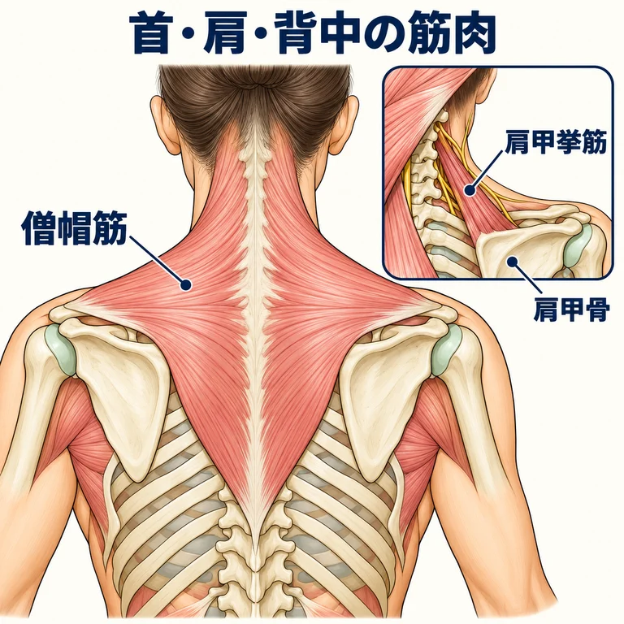
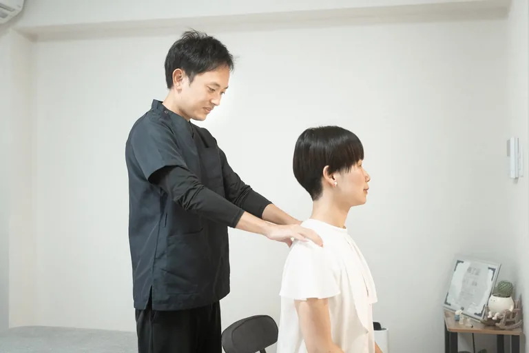
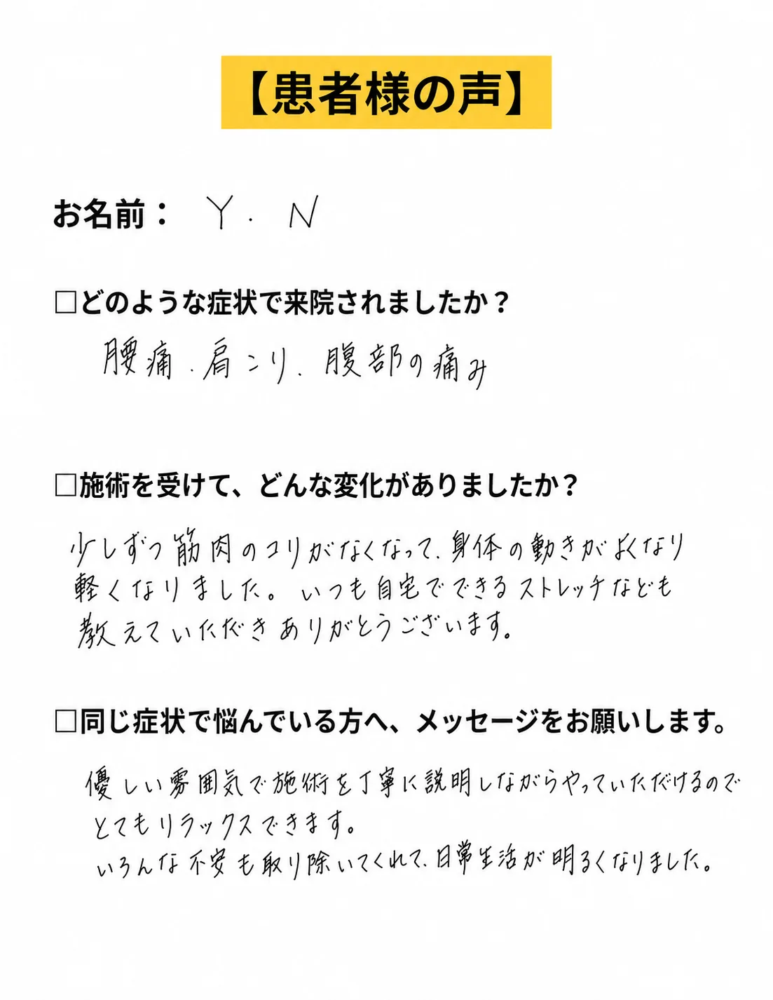
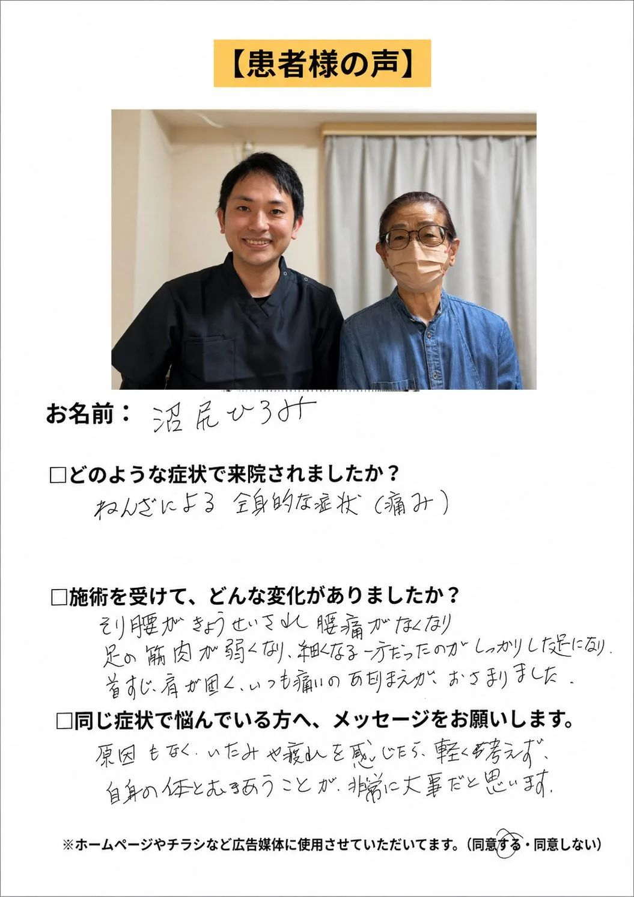

同じ姿勢が続く時間を見直す
作業の区切りに姿勢を変えるなど、首肩に負担が続く場面を調整します。どの姿勢なら楽か、仕事や生活の中で試せる方法を相談します。
首・肩の張りや重さで、仕事や家事がつらい方へ。腕のしびれなども分けて考え、取り組めることをご案内します。
パソコンの前で、肩がじわっと重くなる。家事が終わるころには、首までつらい。いつ、どんな姿勢で気になるかを伺い、今の身体に合う取り組みを考えます。
肩のつらさとともに胸の痛み・息苦しさ・冷や汗がある、片側の手足に急に力が入らない、言葉が出にくい、突然の強い頭痛がある場合は、救急受診が必要です。腕や手のしびれ・力の低下が続く場合も、整形外科などで確認しましょう。
肩こりは、首すじから肩・背中にかけて、張る、重い、痛いなどと感じる症状です。首から肩、背中に広がる僧帽筋など、複数の筋肉が関わります。
肩の筋肉だけでなく、首や肩の関節の病気などに伴うこともあります。腕のしびれや肩の上げにくさがある場合は、その症状も分けて確認します。

長い時間同じ姿勢で作業すること、運動不足、ストレスなどが関わる場合があります。つらくなる作業と、休むとどう変わるかも手がかりになります。
「姿勢が悪いから」「肩甲骨が動かないから」と一つに決めず、症状の経過と、首・肩の動きを見ます。病気が背景にある場合は、その治療が必要です。
筋肉の張りや動かしにくさへの対応と、背景にある病気の治療を分けて考えます。続く症状や、腕のしびれなどは医療機関に伝えてください。
作業の区切りに姿勢を変えるなど、首肩に負担が続く場面を調整します。どの姿勢なら楽か、仕事や生活の中で試せる方法を相談します。
温熱療法、手技、運動療法などが使われます。刺激の強さや動かす範囲は、痛みや身体の状態に合わせます。
首や肩の関節の病気などがあれば、その状態に合う治療を受けます。必要に応じて薬なども検討します。肩こりとして我慢し続けず相談しましょう。
当院では、首肩の張りと全身の動き、普段の作業を確認します。首の病気や神経の状態を整体だけで診断・治療できるとは案内していません。
当院では、筋膜リリースと運動療法を組み合わせた「MSMメソッド」で施術を進めます。
使いすぎている筋肉を「過労筋」、うまく使えていない筋肉を「サボり筋」と呼び、両方の働きを見ていきます。
Mobility｜緩める
使いすぎている筋肉を緩め、身体を動かしやすい状態を目指します。
Stability｜単体の筋肉を使う
うまく使えていない筋肉を意識し、力の入れ方を練習します。
Movement｜動作につなげる
筋肉を使う練習から、日常生活で必要な動作へつなげていきます。
施術と運動に加え、認知行動療法の考え方を取り入れ、痛みへの理解や、動くことへの不安にも向き合います。今の身体でできることを一緒に考え、取り組む内容は状態に合わせて調整します。
目指すのは、ご自身の身体を理解し、自分でケアを続けていけること。卒業に向けてお手伝いします。
パソコン、家事、運転など、どの場面でつらくなるかを伺います。肩の重さに加えて、腕のしびれや力の入りにくさがある場合も教えてください。
写真のように肩まわりの状態を確認し、首・肩・背中の動きや、腕を動かすときの様子を、無理のない範囲で見ます。強く首を回して痛みを確かめてから来る必要はありません。

医療機関での説明や、生活で困っている場面を教えてください。当院で取り組める内容をご案内します。
通院頻度は、症状の強さや続いている期間、生活環境、目指す状態によって異なります。
初回に身体の状態を確認したうえで、必要な頻度と期間の目安をご説明します。ご希望や生活状況も含めてご相談ください。
PATIENT VOICE
肩こりと関わりやすいお悩みで来院された方の内容を掲載しています。症状や経過には個人差があるため、初回は状態を確認しながら方針をご説明します。

Y.N様

N.H様
※効果には個人差があります。掲載しているお声は掲載許可をいただいた方の個人の感想であり、成果を保証するものではありません。
写真は左右にスライドできます


初回カウンセリング＋全身整体コース
カウンセリング・状態確認込み。まずは相談だけでも大丈夫です。
首肩の重さやこりを一緒に整理し、負担をためにくい身体づくりをサポートします。
LINEからご希望日時を送ってください。空き状況を確認して、こちらから返信いたします。
【受付時間】9:00〜19:00 【定休日】日曜
施術中は電話に出られないことがあります。後ほど折り返しお電話いたします。
| 時間 | 月 | 火 | 水 | 木 | 金 | 土 | 日 |
|---|---|---|---|---|---|---|---|
| 9:00〜19:00 | ● | ● | ● | ● | ● | ● | - |
完全予約制／定休日：日曜
詳しい道順・建物入口・駐車場については、アクセスページでご確認いただけます。
最後に、ご相談はこちらから
メールフォームからお名前・お悩み・ご希望日時をお送りください。確認後、折り返しご連絡いたします。
送信が完了しました。
アクセスを確認する資料確認日：2026年10月11日
運営・施術担当：川上卓哉（柔道整復師〈国家資格〉）。代表の経歴・資格を見る
一般的な情報提供であり、診断を目的とするものではありません。症状・状態は一人ひとり異なり、医療機関での評価と治療方針を優先します。